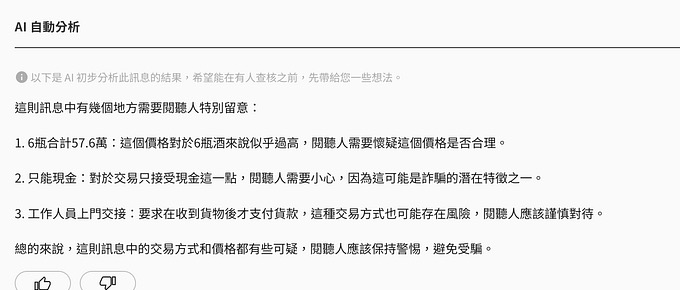
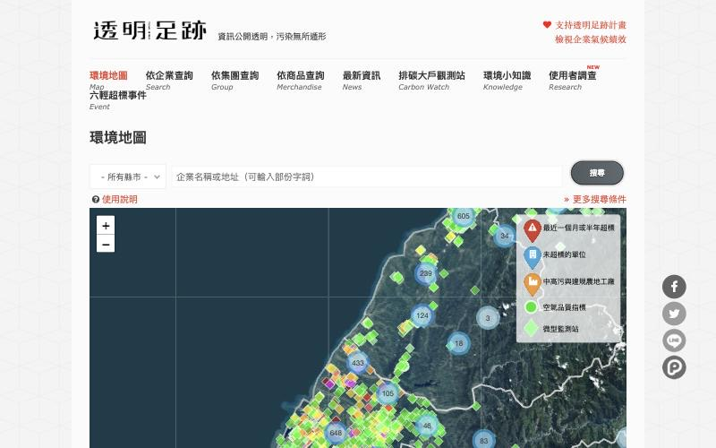
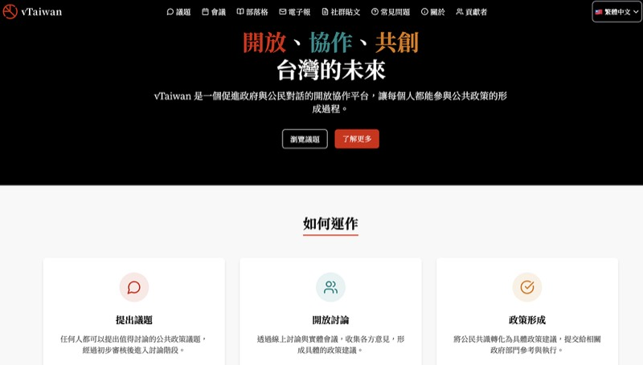
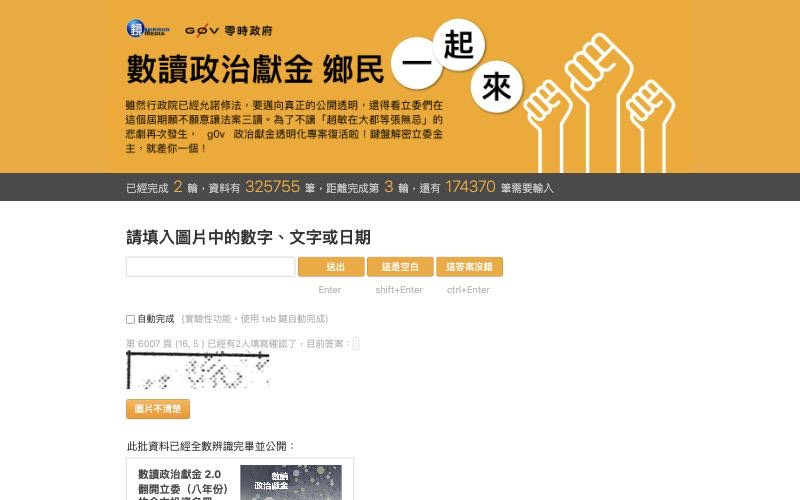
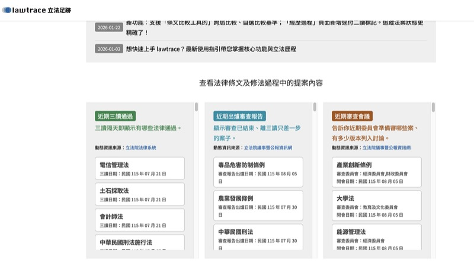

不會寫程式，也能參與。看看臺灣的 g0v.tw 社群怎麼和公民團體、政府、企業合作，用科技解決公共問題。
約 5 分鐘讀完
投票：煙霾問題 →用手機掃碼，直接投票
用科技和數位工具，讓社會變得更好。
公民科技大致有兩種做法：
不管是哪一種，核心都是用科技拉近人和公共事務的距離。這類專案常用到的素材之一，是開放資料，也就是政府或機構主動公開、任何人都能自由取用的資料。
不會寫程式，也能參與。
從研究、管理到推廣，專案的每個環節都需要人。你不必先懂技術：如果你關心某個議題，你對問題的了解，正是專案需要的。
我們該怎麼解決現在的煙霾問題？
來投票，看看大家對煙霾有哪些不同的想法，也看看自己和誰的想法比較接近。
參與討論 →你的投票會成為 FFF 現場討論的材料。
g0v.tw 零時政府是在臺灣發起的公民科技社群。名字把 gov 的 o 換成 0，代表從零開始，重新思考政府的角色，也代表數位世代用 0 和 1 看世界的眼光。
g0v.tw 是去中心化的社群，不是一個組織，也沒有人發號施令。專案由參與的人自己發起、自己找夥伴，唯一的條件是認同開源協作。
一個專案通常這樣開始：
公共問題很難一個人解決。點開看看這些案例怎麼分工，哪一種可以用在你關心的議題？
很多人會在 WhatsApp 這類聊天軟體的群組裡轉傳消息。在臺灣，大家用的是 LINE。
謠言和詐騙訊息在這些私人群組裡流傳，群組外的人看不到，也沒辦法出面更正。查核機構雖然把查證結果公布在網站上，但很少人特地離開聊天室搜尋。
Cofacts 把查證帶進聊天室：轉傳可疑訊息給 Cofacts 的 LINE 帳號，就會收到查證結果和資料來源。不用下載 app，也不用另外開網站，在 LINE 裡就能完成。
轉傳假消息很輕鬆，查證卻很麻煩。用 Cofacts，把訊息轉傳給機器人就能拿到查證結果，而且志工查過一次，之後每個人都能直接收到。志工不一定是專業查核員，但 2023 年有研究發現，Cofacts 的回覆和專業查核機構一樣準確。泰國也用 Cofacts 公開的程式碼，做出了自己的版本。

在臺灣，有些工廠違法蓋在農地上。附近居民最清楚哪裡冒出新工廠，但正式檢舉程序複雜，還得具名，很多人怕被報復而不敢檢舉。
Disfactory 讓居民只要拍照、標出地點就能回報，不用具名，不用懂法規，也不用自己面對政府。地圖上公開每件回報的處理進度，例如處理中、已斷電、已拆除，回報的人可以一路追蹤。
工廠排放廢氣、被政府開罰，這些紀錄其實都公開在網路上，但分散在各地環保局，而且只寫工廠的名稱。一般人看到一張罰單，看不出這家工廠屬於哪個大企業集團，也就很難追究責任。
透明足跡把這些紀錄整理在同一個網站。查一家工廠，就能看到它的污染紀錄，以及它背後的企業集團。
單看一張罰單看不出問題，串起來才看得到責任在誰。2016 年，綠盟用透明足跡發現，六輕（臺灣的大型石化工業區）在 10 個月內有 25,000 筆超標紀錄，卻沒有任何一筆被開罰，因為企業都把這些數據註記成無效。

新科技常常跑得比法律快。2016 年 Uber 在臺灣的合法性引發爭議，計程車司機和支持 Uber 的人看法對立，很容易吵成兩邊。
vTaiwan 讓不同立場的人先找出彼此都同意的地方，再一起談，而不是一開始就吵。
2016 年的 Uber 案，超過 4,000 人參與線上投票，Uber 同意大家討論出的共識，政府也承諾把共識寫進新規範。vTaiwan 官網指出，討論過的 28 個以上議題，約八成促成政府的具體行動。
社群最近也開發了實驗中的 CiviTalk，用 AI 協助大家了解議題的全貌，而不只是選邊站。

選舉時，誰捐了錢給哪位候選人？2014 年的臺灣，政治獻金紀錄雖然依法公開，卻只能親自到監察院（監督官員的政府機關）翻閱紙本，不能搜尋，想複製只能現場影印。
反核團體「反核四五六行動」的成員，把紙本報告掃描成檔案，帶到 g0v.tw 黑客松，找大家一起把內容打成數位資料。打完之後，任何人都能上網搜尋。
每一格都很小，有空檔就能幫忙，上線 24 小時就完成超過 30 萬格的辨識。專案引起社會關注後，立法院（臺灣的國會）在 2018 年修改《政治獻金法》，規定明細必須公開上網，官方查詢平台也在 2019 年上線。

一條法律要修改時，常有好幾個版本的草案。相關資料卻散在立法院（臺灣的國會）的好幾個網站，而且大多是 PDF、圖片或掃描檔，不能直接複製編輯，也很難搜尋。
國會助理、記者、議題工作者這些天天追法案的人，得花大把時間翻網站找資料，甚至重新打字，能拿來寫法案、做報導和倡議的時間就變少了。
LawTrace 把這些資料整理成網站：可以查一條法律過去的條文和修正草案的進度，也能把不同版本的條文逐條並排比較。網站每天更新。
國會助理、記者、議題工作者用 LawTrace 更快查到資料，寫出更好的法案、報導和倡議內容。整理好的資料也開放給所有人，其他團隊已經拿去做出自己的工具，例如立法院公報摘要網站 LYZER。

看完這些例子，也來說說你對煙霾的看法。
參與討論 →You don't need to code to make a difference. See how Taiwan's g0v.tw community works with civic groups, government and companies to solve public problems with tech.
About a 4-minute read
Vote on the haze problem →Scan with your phone to vote
Using technology and digital tools to make society better.
There are two main ways to do it:
Either way, the idea is to use tech to help people engage with public affairs. These projects often rely on open data: data that governments or organisations publish for anyone to use freely.
You don't need to code to make a difference.
From research and management to outreach, every part of a project needs people. You don't have to know the tech first. If you care about an issue, your understanding of the problem is exactly what a project needs.
How can we solve the current haze problem?
Vote to see the different views people hold on the haze, and whose views are closest to yours.
Join the discussion →Your votes will feed into discussions at Freedom Film Fest.
g0v.tw (pronounced “gov zero”) is a civic tech community that started in Taiwan. The name swaps the “o” in “gov” for a zero. It stands for rethinking the government's role from scratch, and for how digital natives see the world in 0s and 1s.
g0v.tw is a decentralised community, not an organisation, and nobody gives orders. People start their own projects and find their own partners. The only requirement is a belief in open-source collaboration, which means sharing work openly so anyone can use it.
A project usually starts like this:
Reference: g0v.tw intro (English), g0v.tw Jothon team, who organise the hackathons (Traditional Chinese)
Public problems are hard to solve alone. Open each case to see how people split the work, and which approach could work for an issue you care about.
Many people forward news in family and friend groups on chat apps like WhatsApp. In Taiwan, most people use LINE.
Rumours and scam messages spread in these private groups, where outsiders can't see them or correct them. Fact-checking organisations publish their results on websites, but few people leave the chat to look for them.
Cofacts brings fact-checking into the chat. Forward a suspicious message to Cofacts' LINE account and you get the result and its sources. There is no app to download or website to visit: it all happens in LINE.
Forwarding fake news is easy. Checking it is hard. With Cofacts, you forward a message to the chatbot and get a result, and once volunteers have checked a message, everyone after that gets the result directly. Volunteers aren't always professional fact-checkers, but a 2023 study found Cofacts' replies were as accurate as professional fact-checks. Thailand built its own version using Cofacts' open-source code.
In Taiwan, some factories are built illegally on farmland. Nearby residents know best where new factories appear, but filing a formal report is complicated and requires your name. Many people fear retaliation and stay silent.
With Disfactory, a photo and a location are enough to report. You don't have to give your name, understand the rules, or face the government alone. The map shows each report's progress, such as in progress, power cut off or demolished, so reporters can see what happens to their report.
Residents only take photos and report. The environmental group takes on the expert checking and the formal complaint, and the government enforces. Each party does only the part it can do.
Factories pollute and get fined, and these records are public online. But they are scattered across local environmental bureaus and list only the factory's name. Looking at one fine, you can't tell which big corporate group the factory belongs to, so it is hard to hold anyone accountable.
Thaubing Footprint (thaubing means “transparent” in Taiwanese) puts the records on one website. Look up a factory and you see its pollution record and the corporate group behind it.
One fine tells you little. Linked together, the data shows who is responsible. In 2016 the Alliance used Thaubing Footprint to find that the Sixth Naphtha Cracker complex (a large petrochemical complex in Taiwan) recorded 25,000 readings over the legal limit in 10 months, yet not one was penalised, because the company had marked all of them as invalid.
New technology often moves faster than the law. In 2016, Uber's legal status in Taiwan sparked a dispute. Taxi drivers and Uber supporters stood on opposite sides, and it could easily have become two camps shouting at each other.
vTaiwan lets people with different views start from what they agree on, then talk, instead of fighting from the start.
In the 2016 Uber case, more than 4,000 people took part in the online vote, Uber agreed to the consensus that emerged, and the government pledged to turn it into new regulation. vTaiwan's website says that of the more than 28 issues discussed, around 80% led to decisive government action.
The community recently built an experimental tool, CiviTalk, that uses AI to help people see the full picture of an issue, not just pick a side.
Who gave money to which candidate? In 2014, Taiwan's political donation records were public by law, but you could only read paper copies in person at the Control Yuan (the government body that oversees officials). You couldn't search them, and copying meant photocopying on the spot.
Members of the anti-nuclear group 反核四五六行動 scanned the paper reports and brought them to a g0v.tw hackathon, asking for help to turn them into digital data. Once typed up, anyone could search them online.
Each cell is tiny, so anyone with a spare moment can help. Within 24 hours, more than 300,000 cells were done. After the project drew public attention, Taiwan's Legislative Yuan (its parliament) amended the Political Donations Act in 2018 to require itemised records to be published online, and an official search platform opened in 2019.
A law being amended often has several draft versions. The related data sits on several different websites of the Legislative Yuan (Taiwan's parliament), mostly as PDFs, images or scans that you can't copy or edit and that are hard to search.
Parliamentary assistants, journalists and issue campaigners who follow bills every day spend a lot of time browsing sites for data, even retyping it. That leaves less time to draft bills, report and campaign.
LawTrace puts the data on one website. You can see a law's past provisions and the progress of proposed amendments, and compare different versions side by side, article by article. The site updates daily.
Parliamentary assistants, journalists and campaigners find data faster with LawTrace and write better bills, reports and campaign material. The cleaned data is also open to everyone, and other teams have already built their own tools on it, such as LYZER (Traditional Chinese site), which summarises Legislative Yuan gazettes.
After these examples, share your own view on the haze.
Join the discussion →report.claire-cheng.com/encivictech.twopenstartervillage.ocf.tw/en/cards